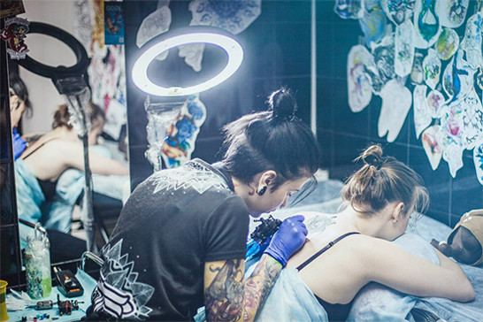
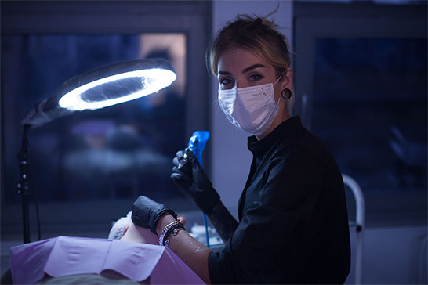
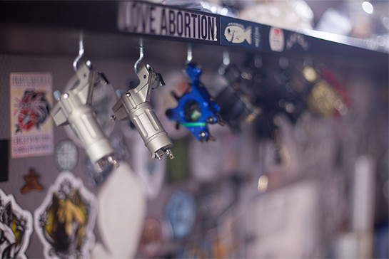

все статьи
СОВЕТЫ ПО
СОВЕТЫ ПО
ВЫБОРУ СТУДИИ

Вы хотите сделать татуировку, примерно представляете что, но ничего не знаете о современной тату-индустрии? Мы естественно будем рады проконсультировать Вас у нас в студии! Но разумный подход предполагает тщательное изучения вопроса и существующего предложения.
В Санкт-Петербурге существует довольно большое количество салонов и студий татуировки. Есть ещё мастера работающие в салонах красоты и на дому. Возьмём на себя смелость дать Вам несколько советов, если вы отправились в обход салонов и студий татуировки Санкт-Петербурга. На что стоит обратить внимание и куда можно в принципе не заходить?
Заголовок 2
Заголовок 3
Заголовок 4
Заголовок 5
Сразу хочется предостеречь Вас от визитов к «домашним» татуировщикам и салонам красоты. В первом случае бывают исключения, но это очень известные мастера, не вписывающиеся в рамки ни одной студии. В салонах красоты, пользуясь недалёкостью администрации в вопросах татуировки, обычно оседают некачественные татуировщики. Именно они распространяют слух о временной татуировке. Бывают конечно исключения, но редко. Татуировки делают в специализированных студиях и салонах! Вы же не пойдёте за лекарствами в булочную?
Кстати это же касается и пирсинга!
И вот вы приходите в специализированную студию татуировки и пирсинга. На что стоит обратить внимание в первую очередь? В приёмной салона татуировки вас должна встретить чистота и относительный порядок. Трезвые, вежливые и адекватные люди впрочем тоже. Вам, конечно, должны ответить на все вопросы, в том числе и глупые с профессиональной точки зрения.


Убедившись, что всё это так, попросите посмотреть фотографии работ мастеров этой студии. Именно руководствуясь портфолио и стоит выбирать мастера. Насколько с художественной точки зрения Вам нравятся его работы. Стоит обратить внимание на техническую сторону, то есть насколько ровные и непрерывные контура его работ, плотность закрасов, плавность переходов и теней, а также наличие или отсутствие «дыр». В хорошей студии кроме катологов с готовыми эскизами Вам смогут предложить разработку индивидуального эскиза. Большой плюс, если студия предлагает готовые эскизы своих мастеров, а не растиражированные популярные флэш сэты.
Ценовая политика может быть разной, но обычно цена колеблется от 2000 до 3500 рублей за час работы. Индивидуальный эскиз от «бесплатно» до 3000 рублей в зависимости от сложности.
Немного про медецинские нормы.
В кабинете должно быть чисто. Вход в рабочий кабинет в сменной обуви или бахилах, одетых на уличную обувь. Некий творческий беспорядок может присутствовать, но рабочее место (стол с машинками и краской) обязательно должно быть закрыто полиэтиленовой плёнкой. Место, где сидит клиент (кушетка или стул) должны быть закрыты одноразовой простынёй. Место, на котором располагается татуируемая часть клиента (например, подставка под руку) также должна быть закрыта плёнкой. В пленку также должна быть завёрнута машина и провод от неё.
| Пирсинг | |
|---|---|
| Ухо(мочка) | 500 руб. |
| Ухо(растяжка) | 1000 руб. |
| Ухо(хрящь) | 1000 руб. |
| Пуп | 1000 руб. |
| Бровь | 1000 руб. |
Татуировщик должен работать в одноразовых стерильных перчатках. Перед работой одноразовые стерильные напаянные иглы и насадка извлекаются из упаковки. Можете попросить, что бы это было сделано при вас.
Металлический не одноразовый держатель вынимается из стирпакета после автоклавирования. Наличие в студии автоклава (медицинский прибор для стерилизации инструмента) обязательно.
После нанесения татуировки мастер должен объяснить Вам как за ней ухаживать и рассказать о существующих ограничениях в период заживления. Коррекция работ после заживления в случае таковой надобности выполняется обычно бесплатно.
- Ухо(мочка)
- Ухо(растяжка)
- Ухо(хрящь)
- Пуп
- Бровь
- Ухо(мочка)
- Ухо(растяжка)
- Ухо(хрящь)
- Пуп
- Бровь
И в завершение, еще раз:
Обращайтесь только к профессионалам!